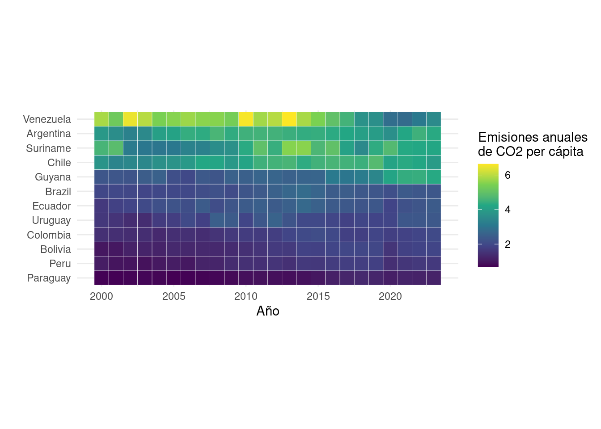
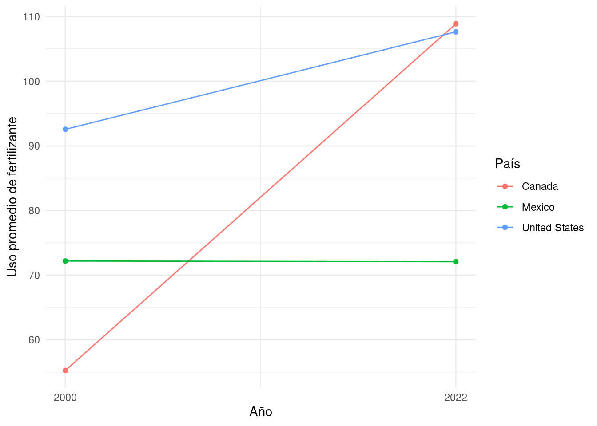
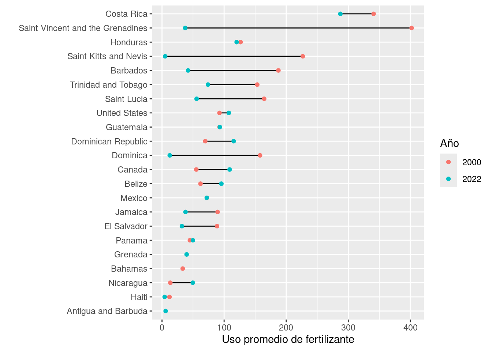
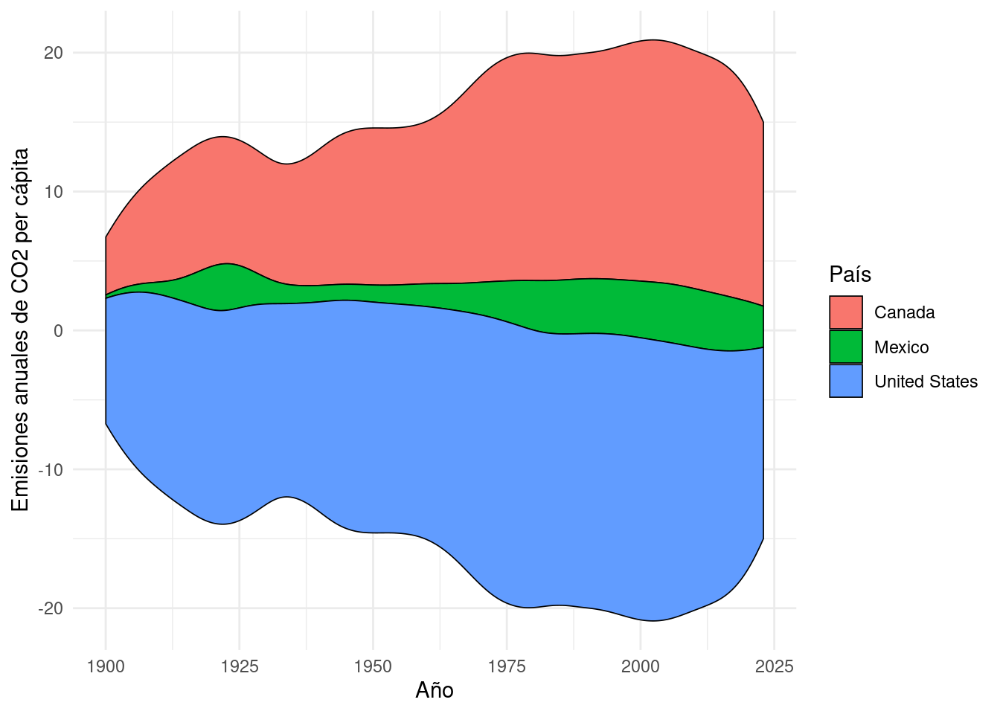
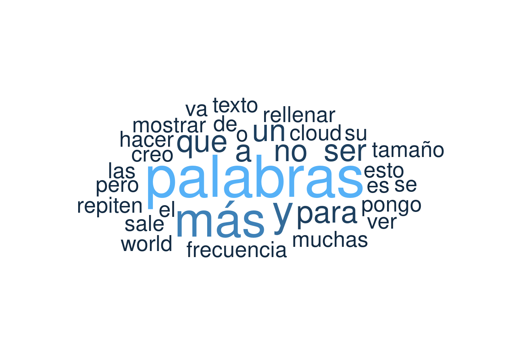

Ya revisamos varios de los tipos de gráficos más comunes, no obstante, existen muchos más. Practicamente cualquiera de ellos se puede crear con ggplot. Algunos se crean usando las mismas geometrías que ya revisamos y para otros necesitamos instalar paquetes complementarios. En este notebook vermos como crear algunos otros tipos de gráficos.
Objetivo
Reconocer otros tipos de gráficos que se pueden crear con ggplot y paquetes complementarios
Cargar librerías y datos
En este notebook vamos a usar ggplot2 para graficar (que viene con tidyverse) y usaremos los datos con información general de los países que hemos usado en notebooks anteriores.
library(tidyverse)
── Attaching core tidyverse packages ──────────────────────── tidyverse 2.0.0 ──
✔ dplyr 1.1.4 ✔ readr 2.1.5
✔ forcats 1.0.0 ✔ stringr 1.5.1
✔ ggplot2 3.5.2 ✔ tibble 3.3.0
✔ lubridate 1.9.4 ✔ tidyr 1.3.1
✔ purrr 1.1.0
── Conflicts ────────────────────────────────────────── tidyverse_conflicts() ──
✖ dplyr::filter() masks stats::filter()
✖ dplyr::lag() masks stats::lag()
ℹ Use the conflicted package (<http://conflicted.r-lib.org/>) to force all conflicts to become errors
datos <-read_csv("misc_world_data_1900_2023.csv")
Rows: 19427 Columns: 12
── Column specification ────────────────────────────────────────────────────────
Delimiter: ","
chr (4): country, code, continent, income
dbl (8): year, population, annual_co2_emissions_per_capita, average_fertiliz...
ℹ Use `spec()` to retrieve the full column specification for this data.
ℹ Specify the column types or set `show_col_types = FALSE` to quiet this message.
view(datos)
Mapa de calor
Los mapas de calor son gráficos que permite visualizar 3 variables: dos en la posición x y y y una en el color. Creemos un mapa de calor que muestre el el cambio en las emisiones anuales de CO2 per cápita a lo largo de los años para los países de América del Sur. Los mapas de calor se pueden crean con geom_title() que viene por defecto en ggplot. Nota como reordenamos los países por sus emisiones de CO2 y usamos la escala de color scale_fill_viridis_c():
datos_america_sur <- datos |>filter(continent =="South America"& year >=2000)ggplot(data = datos_america_sur, mapping =aes(x = year, y =fct_reorder(country, annual_co2_emissions_per_capita), fill = annual_co2_emissions_per_capita)) +geom_tile(color ="white") +# agregarle un controno blanco a los cuadrosscale_fill_viridis_c() +theme_minimal() +coord_equal() +# hacer que sean cuadradoslabs(x ="Año",y ="",fill ="Emisiones anuales\nde CO2 per cápita" )

Gráfico de pendiente
Los gráficos de pendientes son muy útiles para comparar como cambia una variable en dos condiciones (generalmente en dos puntos distintos del tiempo). Creemos un gráfico de pendiente que muestre como ha cambiado el uso de fertilizantes de 2000 a 2022 en algunos países de América del Norte. Primero necesitamos filtrar nuestros datos para quedarnos solo con los países y años que nos interesan. Luego podemos usar las geometrías geom_point() y geom_line() para crear el gráfico:
# Filtrar los datosdatos_mex_usa_can_2000_2022 <- datos |>filter(country %in%c("Mexico", "United States", "Canada")) |>filter(year ==2000| year ==2022) |>drop_na()ggplot(data = datos_mex_usa_can_2000_2022,mapping =aes(x = year, y = average_fertilizer_per_ha, color = country)) +geom_point() +geom_line() +theme_minimal() +labs(x ="Año",y ="Uso promedio de fertilizante",color ="País" ) +scale_x_continuous(breaks =c(2000, 2022))

Dumpbell chart
Otro gráfico común para mostrar cambios entre dos condiciones es el “Dumpbell chart”. Este también se puede crear con geometrías de ggplot básicas. Nota como a diferencia del gráfico de pendiente este tipo de gráfico puede funcionar mejor si tenemos una mayor cantidad de datos.
# Filtrar los datosdatos_america_norte_2000_2022 <- datos |>filter(continent =="North America") |>filter(year ==2000| year ==2022) |>drop_na()ggplot(data = datos_america_norte_2000_2022,mapping =aes(x = average_fertilizer_per_ha, y =fct_reorder(country, average_fertilizer_per_ha))) +geom_line() +geom_point(aes(color =as.factor(year))) +labs(x ="Uso promedio de fertilizante",y ="",color ="Año" )

Stream graph
Otra visualización común es el gráfico de correintes (stream graph). Este muestra como una variable cambia en el tiempo usando áreas.
# install.packages("ggstream")library(ggstream)datos_america_mex_usa_can <- datos |>filter(country %in%c("Mexico", "United States", "Canada"))ggplot(data = datos_america_mex_usa_can,mapping =aes(x = year, y = annual_co2_emissions_per_capita, fill = country)) +geom_stream(color ="black", size =0.3) +labs(x ="Año",y ="Emisiones anuales de CO2 per cápita",fill ="País" ) +theme_minimal()
Warning: Using `size` aesthetic for lines was deprecated in ggplot2 3.4.0.
ℹ Please use `linewidth` instead.

Nube de palabras
Otro tipo de visualización común son las nubes de palabras. Estos se pueden usar por ejempo para visualizar textos o presentaciones orales. En las nubes de palabras generalmente el tamaño o el color representan una mayor frecuencia de esos términos. Para crear una nube de palabras podemos auxiliarnos de dos paquetes tidytext y ggwordcloud. Primero debemos crear una tabla donde en una columna tengamos las palabras y en otra el conteo de su frecuencia en el texto, y luego podemos usar geom_text_wordcloud() para crear la visualización:
## Cargar los paquetes# install.packages(c("tidytext", "ggwordcloud"))library(tidytext)library(ggwordcloud)# El texto para hacer el conteotexto <-"Esto es un texto para hacer un world cloud. El tamaño de las palabras va a mostrar su frecuencia. Creo que no se repiten muchas palabras, pero a ver que sale. Pongo más palabras, palabras, palabras y palabras. Más y más y más y más palabras para rellenar. Ser o no ser."# Crear la tabla con el conteo de las palabrasconteo_palabras <-tibble(linea =1, texto = texto) |>unnest_tokens(palabra, texto) |>count(palabra, sort =TRUE) |>rename(frecuencia = n)head(conteo_palabras)
# A tibble: 6 × 2
palabra frecuencia
<chr> <int>
1 palabras 7
2 más 5
3 y 4
4 a 2
5 no 2
6 para 2
# Crear el wordcloudggplot(data = conteo_palabras,mapping =aes(label = palabra, size = frecuencia, color = frecuencia)) +geom_text_wordcloud() +scale_size_area(max_size =20) +# controlar el tamaño de las palabrastheme_minimal()

Muchos más gráficos
Lo que vimos aquí solo fue una pequeña muestra de lo que puedes hacer con R. En R graph gallery, R Charts varias otras páginas puedes consultar muchos otros tipos de visualización y ver cómo se hacen.
Ejecutar el código
---title: "20 - Otros gráficos"output: html_documenteditor_options: chunk_output_type: console---## IntroducciónYa revisamos varios de los tipos de gráficos más comunes, no obstante, existen muchos más. Practicamente cualquiera de ellos se puede crear con ggplot. Algunos se crean usando las mismas geometrías que ya revisamos y para otros necesitamos instalar paquetes complementarios. En este notebook vermos como crear algunos otros tipos de gráficos.**Objetivo**- Reconocer otros tipos de gráficos que se pueden crear con ggplot y paquetes complementarios## Cargar librerías y datosEn este notebook vamos a usar `ggplot2` para graficar (que viene con `tidyverse`) y usaremos los datos con información general de los países que hemos usado en notebooks anteriores. ```{r}library(tidyverse)datos <-read_csv("misc_world_data_1900_2023.csv")view(datos)```## Mapa de calorLos mapas de calor son gráficos que permite visualizar 3 variables: dos en la posición `x` y `y` y una en el color. Creemos un mapa de calor que muestre el el cambio en las emisiones anuales de CO2 per cápita a lo largo de los años para los países de América del Sur. Los mapas de calor se pueden crean con `geom_title()` que viene por defecto en `ggplot`. Nota como reordenamos los países por sus emisiones de CO2 y usamos la escala de color `scale_fill_viridis_c()`:```{r}datos_america_sur <- datos |>filter(continent =="South America"& year >=2000)ggplot(data = datos_america_sur, mapping =aes(x = year, y =fct_reorder(country, annual_co2_emissions_per_capita), fill = annual_co2_emissions_per_capita)) +geom_tile(color ="white") +# agregarle un controno blanco a los cuadrosscale_fill_viridis_c() +theme_minimal() +coord_equal() +# hacer que sean cuadradoslabs(x ="Año",y ="",fill ="Emisiones anuales\nde CO2 per cápita" )```## Gráfico de pendienteLos gráficos de pendientes son muy útiles para comparar como cambia una variable en dos condiciones (generalmente en dos puntos distintos del tiempo). Creemos un gráfico de pendiente que muestre como ha cambiado el uso de fertilizantes de 2000 a 2022 en algunos países de América del Norte. Primero necesitamos filtrar nuestros datos para quedarnos solo con los países y años que nos interesan. Luego podemos usar las geometrías `geom_point()` y `geom_line()` para crear el gráfico:```{r}# Filtrar los datosdatos_mex_usa_can_2000_2022 <- datos |>filter(country %in%c("Mexico", "United States", "Canada")) |>filter(year ==2000| year ==2022) |>drop_na()ggplot(data = datos_mex_usa_can_2000_2022,mapping =aes(x = year, y = average_fertilizer_per_ha, color = country)) +geom_point() +geom_line() +theme_minimal() +labs(x ="Año",y ="Uso promedio de fertilizante",color ="País" ) +scale_x_continuous(breaks =c(2000, 2022))```## Dumpbell chartOtro gráfico común para mostrar cambios entre dos condiciones es el "Dumpbell chart". Este también se puede crear con geometrías de ggplot básicas. Nota como a diferencia del gráfico de pendiente este tipo de gráfico puede funcionar mejor si tenemos una mayor cantidad de datos.```{r}# Filtrar los datosdatos_america_norte_2000_2022 <- datos |>filter(continent =="North America") |>filter(year ==2000| year ==2022) |>drop_na()ggplot(data = datos_america_norte_2000_2022,mapping =aes(x = average_fertilizer_per_ha, y =fct_reorder(country, average_fertilizer_per_ha))) +geom_line() +geom_point(aes(color =as.factor(year))) +labs(x ="Uso promedio de fertilizante",y ="",color ="Año" )```## Stream graphOtra visualización común es el gráfico de correintes (stream graph). Este muestra como una variable cambia en el tiempo usando áreas.```{r}# install.packages("ggstream")library(ggstream)datos_america_mex_usa_can <- datos |>filter(country %in%c("Mexico", "United States", "Canada"))ggplot(data = datos_america_mex_usa_can,mapping =aes(x = year, y = annual_co2_emissions_per_capita, fill = country)) +geom_stream(color ="black", size =0.3) +labs(x ="Año",y ="Emisiones anuales de CO2 per cápita",fill ="País" ) +theme_minimal()```## Nube de palabrasOtro tipo de visualización común son las nubes de palabras. Estos se pueden usar por ejempo para visualizar textos o presentaciones orales. En las nubes de palabras generalmente el tamaño o el color representan una mayor frecuencia de esos términos. Para crear una nube de palabras podemos auxiliarnos de dos paquetes `tidytext` y `ggwordcloud`. Primero debemos crear una tabla donde en una columna tengamos las palabras y en otra el conteo de su frecuencia en el texto, y luego podemos usar `geom_text_wordcloud()` para crear la visualización:```{r}## Cargar los paquetes# install.packages(c("tidytext", "ggwordcloud"))library(tidytext)library(ggwordcloud)# El texto para hacer el conteotexto <-"Esto es un texto para hacer un world cloud. El tamaño de las palabras va a mostrar su frecuencia. Creo que no se repiten muchas palabras, pero a ver que sale. Pongo más palabras, palabras, palabras y palabras. Más y más y más y más palabras para rellenar. Ser o no ser."# Crear la tabla con el conteo de las palabrasconteo_palabras <-tibble(linea =1, texto = texto) |>unnest_tokens(palabra, texto) |>count(palabra, sort =TRUE) |>rename(frecuencia = n)head(conteo_palabras)# Crear el wordcloudggplot(data = conteo_palabras,mapping =aes(label = palabra, size = frecuencia, color = frecuencia)) +geom_text_wordcloud() +scale_size_area(max_size =20) +# controlar el tamaño de las palabrastheme_minimal()```## Muchos más gráficosLo que vimos aquí solo fue una pequeña muestra de lo que puedes hacer con R. En [R graph gallery](https://r-graph-gallery.com/), [R Charts](https://r-charts.com/ggplot2/) varias otras páginas puedes consultar muchos otros tipos de visualización y ver cómo se hacen.